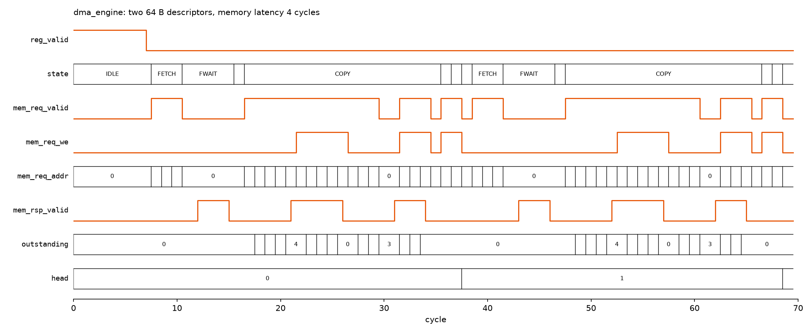

Generated from tag v0.2.0 of the repository. Simulation, open tool synthesis and one silicon run; no physical FPGA.
| Copy size | Memory latency | Cycles | Bytes per cycle | Verified |
|---|---|---|---|---|
| 64 B | 1 | 833 | 2.459 | yes |
| 512 B | 1 | 4417 | 3.709 | yes |
| 4096 B | 1 | 33089 | 3.961 | yes |
| 65536 B | 1 | 131153 | 3.998 | yes |
| 64 B | 8 | 1089 | 1.881 | yes |
| 512 B | 8 | 4897 | 3.346 | yes |
| 4096 B | 8 | 35361 | 3.707 | yes |
| 65536 B | 8 | 139401 | 3.761 | yes |
| 64 B | 32 | 2625 | 0.780 | yes |
| 512 B | 32 | 11809 | 1.387 | yes |
| 4096 B | 32 | 85281 | 1.537 | yes |
| 65536 B | 32 | 336201 | 1.559 | yes |

| Module | LUT4 | FF | Carry | Fmax (MHz) |
|---|---|---|---|---|
| dma_engine | 966 | 954 | 154 | 129.10 |
| cfg_space | 138 | 75 | 0 | no reg to reg path |
| tlb | 912 | 166 | 0 | 115.47 |
| tlp_hdr_decode | 74 | 0 | 0 | no reg to reg path |
test iterations r0=0,r1=0 r0=0,r1=1 r0=1,r1=0 r0=1,r1=1 relaxed outcome SB 2000000 10576 994429 994995 0 10576 SB+dmb 2000000 0 1001528 997188 1284 0 MP 2000000 1004043 627499 181 368277 181 MP+dmb 2000000 999822 999661 0 517 0 MP+stlr+ldar 2000000 1002095 686901 0 311004 0 LB 2000000 818335 260871 920794 0 0